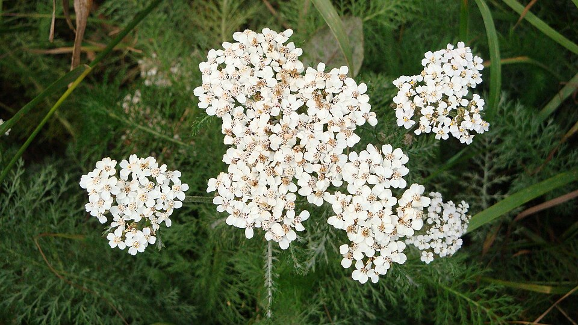

Yarrow

Photo by: National Park Service
- Scientific Name: Achillea millefolium
- Other Names: Western Yarrow, Milfoil, Common Yarrow, Nosebleed Plant, Old Man's Pepper, and Soldier's Woundwort
- Description: The plant is 4 – 39 in. (10 -100 cm.) tall. The flowers are white with yellow centers each flower is about 1/8 of an in. (2 – 3 mm.) in length and width. They have long straight stalks. They have narrow leaves that look lacy and fern-like.
- Distribution: The plant grows throughout North America.
- Habitat: Meadows, prairies, roadsides, and disturbed soil. Yarrow usually grows in dry and well-drained dirt.
- Fun Fact: Millefolia means "thousand leaves".